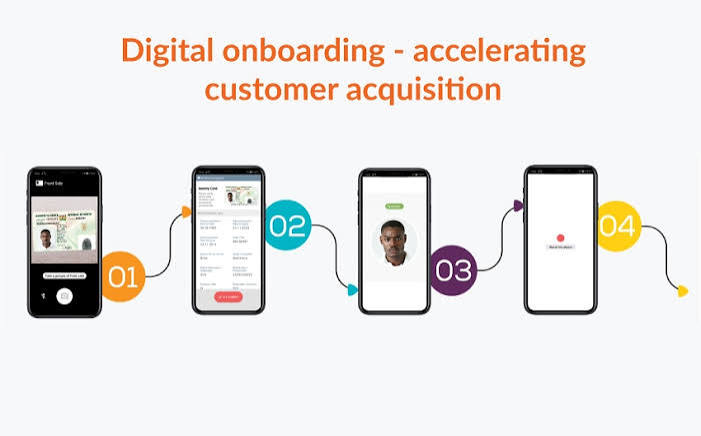

Digital Onboarding Optimization

Context:
Product Analytics and Lean Six Sigma case study focused on optimizing a digital onboarding journey by reducing friction in the identity verification process and improving step conversion.
Approach:
Journey mapping, funnel analysis, root-cause identification, effort versus impact prioritization, statistical testing, financial impact simulation, and KPI monitoring.